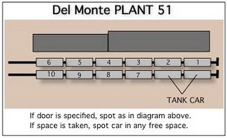
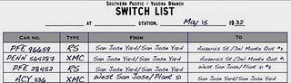

On smaller model railroad layouts, finding ways to challenge the operators to lengthen operations and draw out the fun is a big challenge. A fifteen minute switching assignment isn't satisfying, but dragging that assignment out to an hour by realistic, challenging problems can make the model railroad much more fun to operate.
One way that real railroad switching gets complicate is car spotting requirements. Large industries often had specific rules about where cars would be placed. In an auto plant, boxcars of parts needed to be placed closest to the part of the assembly line using those parts. A cannery or packing house might want the freight car for a load placed closest to where the cargo is in the warehouse. Because most railroad industries are large enough to have multiple doors or spotting locations, this is a simple and straightforward way to increase switching entertainment for your crews.
By default, SwitchList only specifies car placement by industry. If you turn on the "Spot Cars at Specific Door" option in the Layout tab for your layout file, then new controls get added to the Industry tab to let you specify whether an industry will have specific door assignments, and how many doors the industry has.
 SwitchList allows each industry to have a fixed number of doors or spotting locations, numbered starting at 1. The actual arrangement of the doors is up to you, either via markings on the building or a plan on your layout's fascia. The doors can all be on one track, or could be on parallel tracks. SwitchList will only assign one car per door. If you have parallel tracks (where door 1 could have two cars, one on the near track and one on the far), either treat the two tracks as separate industries, or give the spots on the second track higher numbers. On my layout, one fruit packing warehouse can hold 10 cars, six on the near track and four on a parallel track. These spots are numbered 1-6 and 7-10 for the "Plant 51" industry. The same track also has two spaces reserved for tank cars - the "Plant 51 Oil" industry - an interesting reminder of how a single building can have more than one "industry", more than one track can map to an "industry", and more than one industry can map to the same track.
Not every industry needs to have specific door spots; it's most useful for large industries that in real life would have been picky about car spotting, and larger industries that deserve the extra time and focus from your switch crews.
 When you print switch lists for industries with door spotting instructions, the switch list will list the destination industry as usual, and append a "#x" to indicate the door. This tells the switching crew the car's final placement. Door spotting instructions are only given for destinations; a car being picked up only is identified by it's current industry.
SwitchList only allows one car to be placed at a door at a time. When preparing switch lists, the program sees which doors are occupied, and only places freight cars at doors that are either unoccupied, or are occupied by a departing car being moved by the same train. Currently, there is no indication in SwitchList about the current door placement of cars at a door-ful industry.
Not all switch crews and model railroaders like the complications of door assignments and the extra sorting and reordering they require. You might ask novice crews to disregard door spotting instructions if the work appears to be too much of a challenge. Also, be careful how cars are blocked at the originating yard. If cars are placed in the train in order, door spotting might be easy, but if the cars are scattered in the train or are in reverse order compared to their final location, the crew can be up for significant work.
See Also:
Sample Layouts to see how door assignments are used on the Vasona Branch layout.
Layout Tab to see where the "Spot Car at Specific Door" checkbox is located.
{kind=link}
{kind=link}